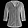

Teaching machines to see style.
Upload a clothing photo and let a Convolutional Neural Network trained on Fashion-MNIST classify it in real time. No mockups — every prediction comes from the actual Keras model.
- Dataset
- 70,000
- Classes
- 10
- Val. accuracy
- 90.16%
01 / THE DATASET
A small image,
a lot to learn.
Fashion-MNIST is a drop-in replacement for MNIST built by Zalando Research. Every image is a 28 × 28 grayscale photo of an everyday clothing item, labelled across 10 balanced classes.
samples
70,000
resolution
28×28
split
60k / 10k
classes
10
T-shirt/top
Trouser
Pullover
Dress
Coat
Sandal

Shirt
Sneaker
Bag
Ankle boot
02 / THE ARCHITECTURE
From pixels to prediction.
A compact CNN learns edges, textures and silhouettes layer by layer, then maps the extracted features to 10 softmax probabilities.
Input
28 × 28 × 1 grayscale, scaled to [0, 1] before inference.
Conv2D + ReLU
32 filters of 3 × 3 learn low-level edges and textures.
Pool + Conv2D
Downsample, then learn 64 richer 3 × 3 feature maps.
Dense + Softmax
Flatten to 1,600 features, then classify across 10 classes.
Layer summary
121,930 trainable parameters
| Layer | Type | Output shape | Params |
|---|---|---|---|
| input_layer | InputLayer | (28, 28, 1) | 0 |
| conv2d | Conv2D · 32 · 3×3 · ReLU | (26, 26, 32) | 320 |
| max_pooling2d | MaxPooling2D · 2×2 | (13, 13, 32) | 0 |
| conv2d_1 | Conv2D · 64 · 3×3 · ReLU | (11, 11, 64) | 18,496 |
| max_pooling2d_1 | MaxPooling2D · 2×2 | (5, 5, 64) | 0 |
| flatten | Flatten | (1,600) | 0 |
| dense | Dense · 64 · ReLU | (64) | 102,464 |
| dense_1 | Dense · 10 · Softmax | (10) | 650 |
03 / LIVE INFERENCE
Ask the model.
Upload a clothing photo or pick a Fashion-MNIST test sample. The image is sent to the Flask API, preprocessed to 28 × 28 grayscale, and classified by the CNN.
or use a test sample
about the model →Inference runs on the Flask + TensorFlow backend. Nothing is stored.
Waiting for an input
Select a sample or upload a photo, then run the CNN to see the predicted class and full probability distribution.
Running inference…
Preprocessing the image and querying the CNN.
Prediction failed
Something went wrong.
Make sure the Flask backend is running on port 5000.
Predicted class
—
Top-1 of 10 classes
Confidence
—
model input
Samples are taken from the Fashion-MNIST test split (10,000 images never used for gradient updates). Uploaded photos may be classified less accurately because they differ from the 28 × 28 grayscale training distribution.
04 / PROJECT RESOURCES
Go deeper.
Read the implementation, follow the methodology, and watch the presentation behind the pixels.